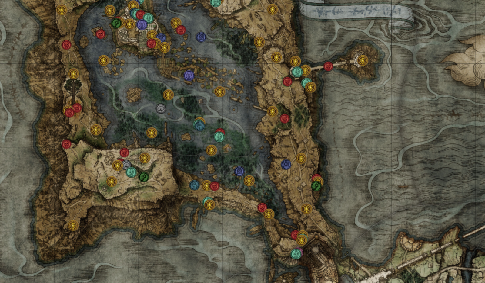
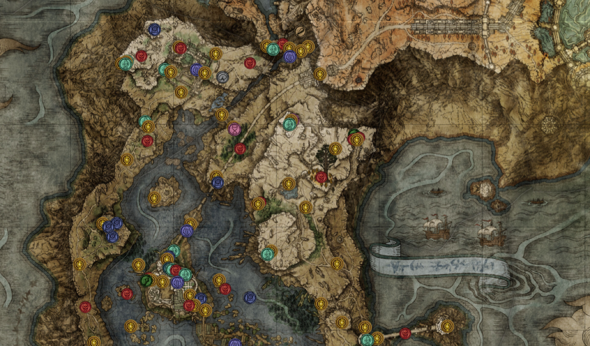

Liurnia
 - Church of Irith
- Laskyar Ruins
- Boilprawn Shack
- Academy Gate Town
- Malefactor's Evergaol
- Stillwater Cave
- Purified Ruins
- Cliffbottom Catacombs
- Highway Lookout Tower
- Night's Cavalry
- Tibia Mariner
- Jarburg
- Artist's Shack
- Carian Study Hall (Standard)
- Carian Study Hall (Inverted)
- Godskin Noble & Divine Tower of Liurnia
- Ainsel River Well
- Church of Vows
- Uld Palace Ruins
- Minor Erdtree
- Raya Lucaria Crystal Tunnel
- Death Rite Bird (Liurnia)
- Testu's Rise
- Academy Crystal Cave
- Glintstone Dragon Smarag
- Temple Quarter
- Rose Church
- Village of the Albinaurics
- Lakeside Crystal Cave
- Slumbering Wolf's Shack
- Deathbird (Liurnia)
- Converted Tower
- Minor Erdtree
- Road's End Catacombs
- Revenger's Shack
- Cuckoo's Evergaol
- The Four Belfries
- Kingsrealm Ruins
- Caria Manor
- Ranni's Rise
- Seluvis's Rise
- Renna's Rise
- Royal Grave Evergaol
- Ravine-Veiled Village
- Ruin-Strewn Precipice
- Academy of Raya Lucaria
- Bellum Church
- Night's Cavalry (Liurnia)
- Grand Lift of Dectus
- Frenzy-Flame Tower
- Frenzied Flame Village
- Church of Inhibition
- Converted Fringe Tower
- Black Knife Catacombs